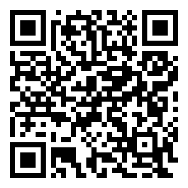
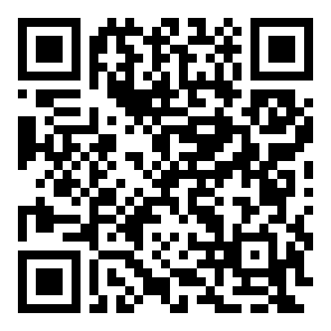
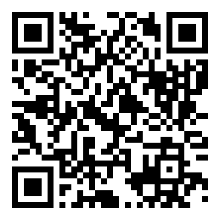
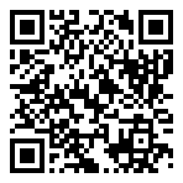
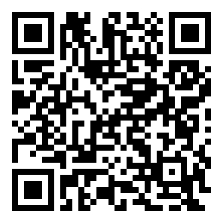
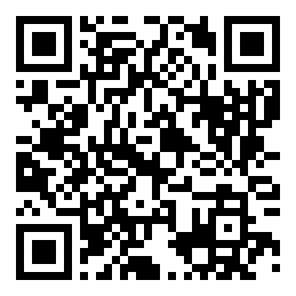
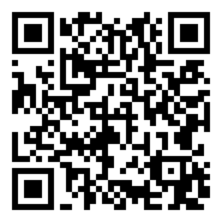

In trang này để thử quét, hoặc dùng trong video demo.

Cổng Bến – Rương báuMở rương khi đủ 6 mảnh · mã RUONGhttps://truongduylongptit.github.io/SonTraInnovation/#/q/RUONG
Trạm 1Vì sao thúng chai nổi? · mã B7TChttps://truongduylongptit.github.io/SonTraInnovation/#/q/B7TC
Trạm 2Nút buộc của ngư dân · mã K4NDhttps://truongduylongptit.github.io/SonTraInnovation/#/q/K4ND
Trạm 3Con nước và mặt trăng · mã M9CNhttps://truongduylongptit.github.io/SonTraInnovation/#/q/M9CN
Trạm 4Nhìn sao đi biển → GPS · mã S2GPhttps://truongduylongptit.github.io/SonTraInnovation/#/q/S2GP
Trạm 5Muối, cá và nước mắm · mã N5NMhttps://truongduylongptit.github.io/SonTraInnovation/#/q/N5NM
Trạm 6Hành trình chai nhựa ra biển · mã R6CNhttps://truongduylongptit.github.io/SonTraInnovation/#/q/R6CN